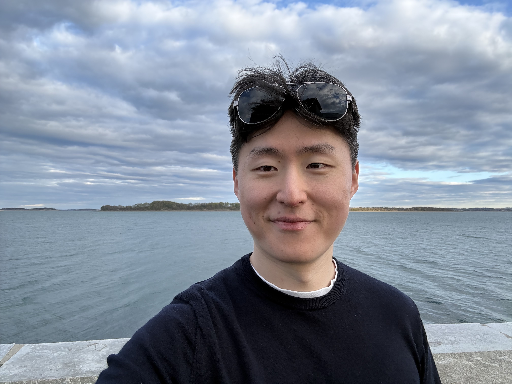

Charlie Wu
Postdoctoral fellow
Max Planck Institute for Mathematics
Bonn, Germany
I am interested in algebraic geometry and number theory.
Previously, I was a PhD student in the mathematics department at the University of Toronto, where I was very fortunate to be a student of Daniel Litt.
